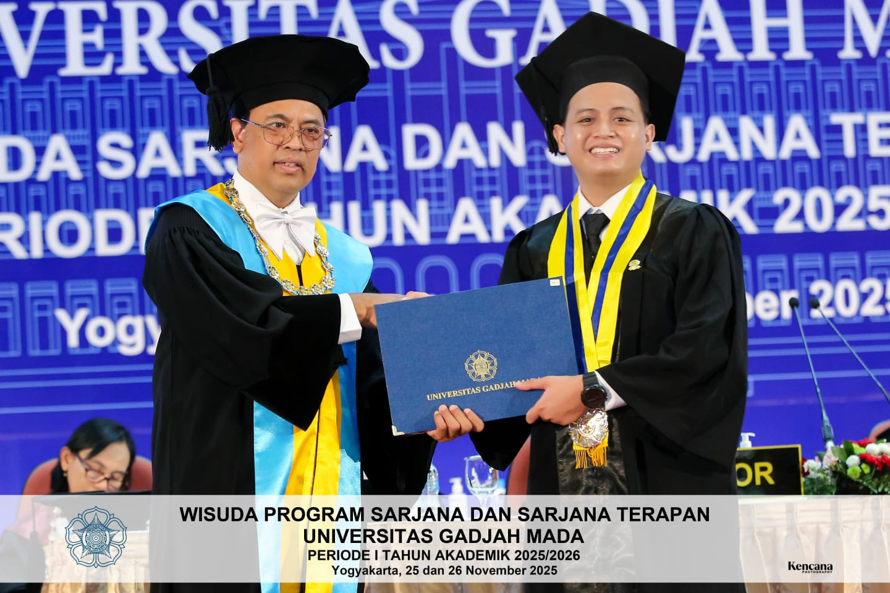
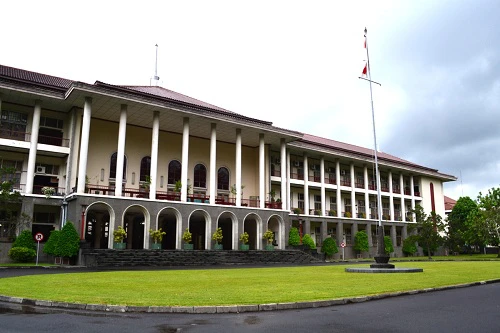
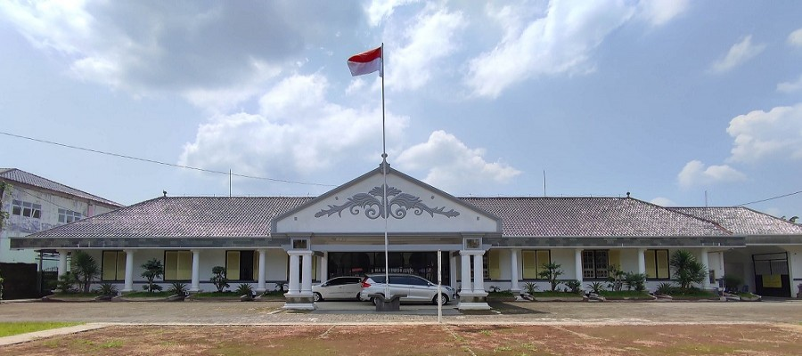

Data Analyst | Mathematics Tutor
Mathematics graduate from Universitas Gadjah Mada (UGM) with strong analytical and problem-solving skills. Experienced in data analysis using Excel and Python, with interests in risk analysis, operational efficiency, and data-driven decision making. Detail-oriented, adaptable, and highly motivated.

Universitas Gadjah Mada
Bangkit Academy 2024

SMAN 5 Purwokerto